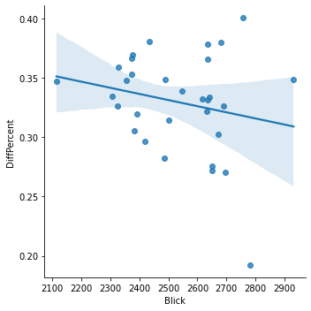

Tops and flops of the month
In a nutshell: what was the best and worst day of the month in the competition for visits between Blick and 20 Minuten?
Juli 2021 daily visitors
In a nutshell: what was the best and worst day of the month in the competition for visits between Blick and 20 Minuten?
Woaw!
On 31.07.2021, Blick was closest to 20 Minuten, with a 19% difference in visits only (that's 13% smaller than average).
This day, we had 2,781,600 visits (vs 3,373,400 for 20 Minuten).
This was our #2 day of the Month in terms of visits.
These were the most trending Twitter topics in Switzerland on that day:
#BelindaBencic, #tennis, #Tokyo2020, #HungarianGP, Hamilton
Well, not so good…
On 15.07.2021, Blick was really distanciated by 20 Minuten, with a 40% difference in visits (that's 7% more than average). This is our worst day in the battle.
This day, we had 2,757,600 visits (vs 4,139,700 for 20 Minuten).
This was our #3 day of the Month in terms of visits.
These were the most trending Twitter topics on that day:
#Hochwasser, Allemagne, Belgique, Situationen, #Klimakatastrophe
For each day, the top news of the days for Switzerland, according to a service called Gnews.io.
Unfortunately, we are not so sure the data is reliable, but the very reliable Google doesn't provide a history of top news.
Linear correlation between # of visits and gap between Blick and 20 Minutes?

Pearson's R: (-0.21675144585865852, 0.24151221117855579)